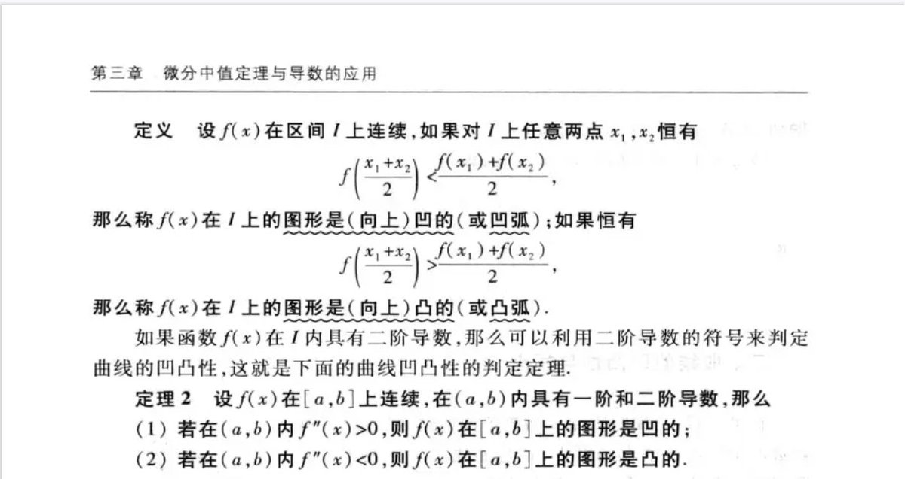
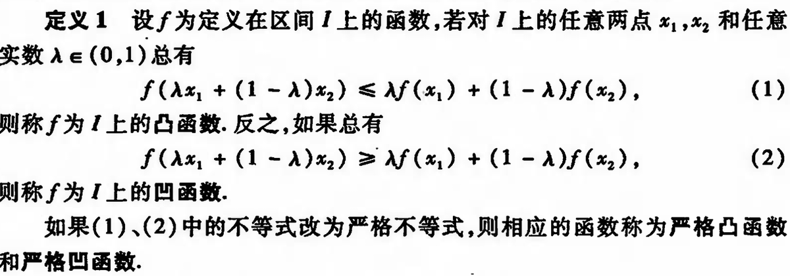
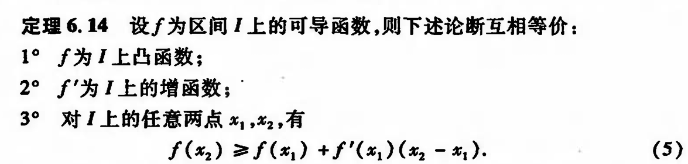
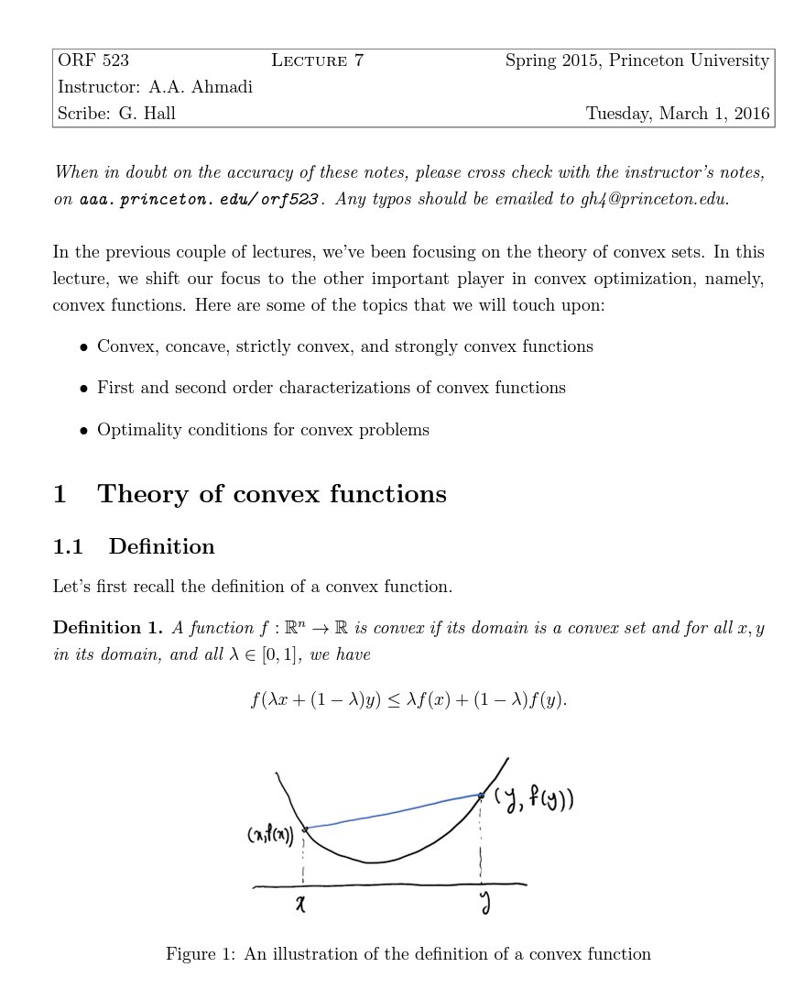

𝓶𝓸𝓻𝓽𝓲𝓼
@0Yowlry
RT @Desvl_: 图1是同济高数上的凸函数定义，图2和3是华东师范数学分析上凸函数的定义，然后两个是完全反着的……
实际情况是100多年前Jensen给出所谓Jensen不等式的时候也是和华东师范这个一样。然后同济高数就做了一个违背祖宗的决定！
在google上搜conv…




Desvl
@Desvl_
图1是同济高数上的凸函数定义，图2和3是华东师范数学分析上凸函数的定义，然后两个是完全反着的……
实际情况是100多年前Jensen给出所谓Jensen不等式的时候也是和华东师范这个一样。然后同济高数就做了一个违背祖宗的决定！
在google上搜convex function你绝对找不到和同济高数一致的。 https://t.co/YB9mjlWgrj